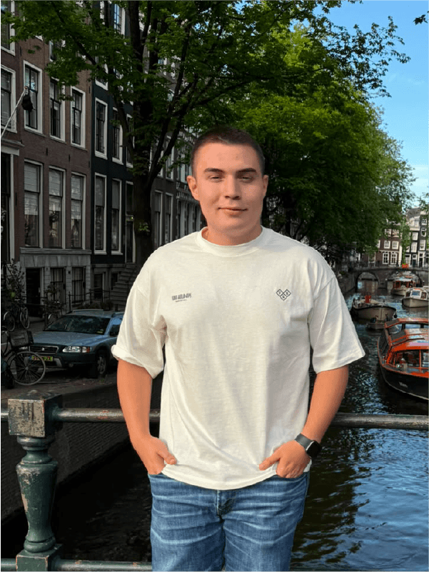

Talento Fundador
Mentes detrás de Celator
Un bloque multidisciplinario dedicado a redefinir la ciberseguridad defensiva activa.

Gustavo Ampudia
Audiovisual & Frontend
Experto en UX/UI, producción audiovisual y diseño de interfaces tecnológicas avanzadas.

Nicolas Cardenas
Especialista SOC & Azure
Líder en monitoreo defensivo, respuesta a incidentes críticos y arquitectura Cloud corporativa.
Jean Pierre Reveiz
Pentester & Perito
+10 años en caza de vulnerabilidades críticas, auditorías forenses informáticas y desarrollo de algoritmos propietarios.

Samuel Gil
Comercial & Estrategia
Socio estratégico clave, especialista en adquisición corporativa, retención y expansión de mercado global.